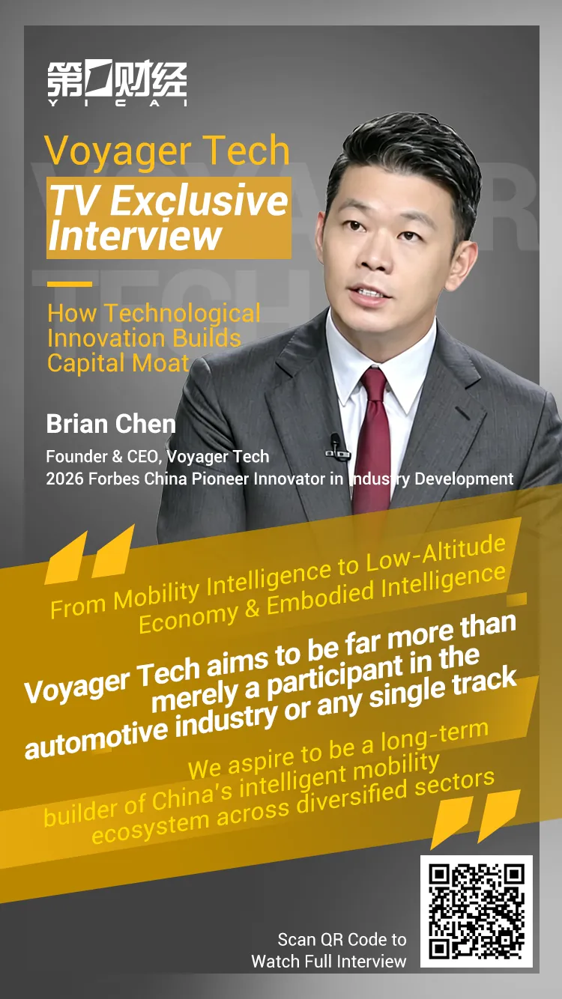

Recently, Brian Chen, Founder, Chairman & CEO of Voyager Tech, was honored to be interviewed on First Voice by Yicai, sharing the development experience and strategic layout of China’s homegrown tech enterprises.
Mr. Brian Chen is the Founder, Chairman & CEO of Voyager Tech and inventor of multiple computer vision technologies. He founded Voyager Group in 2013 and led the team to obtain certifications as a National High-tech Enterprise and a National Specialized, Refined, Unique & Innovative "Little Giant" Enterprise. He was named the 2026 Forbes China Industry Innovation Leader.

Q1 Yicai:
You left a senior management role at a multinational auto OEM to start your own business. What was your original aspiration for founding Voyager Tech? What strategic commitment does full-stack self-development represent?
Brian Chen:
Our founding aspiration can be summed up in one sentence: to grasp core capabilities for China’s intelligent mobility in our own hands and continuously commercialize these technologies. Back in 2013, China’s auto production and sales volumes ranked among the world’s top, yet all core intelligent technologies were controlled by overseas companies — this was the industry pain point we set out to solve.
We chose full-stack self-development not to cover every single industrial link, but to independently master three core underlying technologies: intelligent perception, intelligent assisted driving, and intelligent cockpit. This brings three core benefits: self-controllable technical routes, quantifiable and manageable costs, and standardized platforms reusable across multiple scenarios.
Q2 Yicai:
Where do Voyager Tech’s technical moats and core competitive advantages lie?
Brian Chen:
Automotive intelligence has entered its second half. The industry no longer merely competes on hardware parameters and performance metrics; it demands comprehensive full-stack system integration capabilities. Voyager’s competitive advantages fall into three categories: first, full closed-loop self-development capability; second, platform-based cost controllability; third, mass production and delivery capacity proven at the million-unit scale.
Full-stack self-development means we achieve end-to-end independent control of underlying hardware, self-developed algorithms, and integrated vehicle systems. One unified technical closed-loop can flexibly adapt to diverse clients and vehicle models. Modular development further delivers platform-based cost advantages, with standardized architectures compatible with all mainstream computing hardware and vehicle platforms.
As for mass delivery, we built our proprietary hardware production lines and in-house manufacturing bases as early as 2016–2017 to keep production capacity internalized. To date, our cumulative product deliveries have reached the million-unit threshold, with our mass production capabilities fully validated by years of market operation.
Q3 Yicai:
The Group holds over 200 core patents, with R&D staff accounting for nearly one-third of all employees. How do you balance heavy long-term R&D investment and short-term profitability?
Brian Chen:
We never treat R&D merely as a cost center. Long-term technical investment and short-term profitability are not mutually exclusive. Voyager’s R&D stays closely aligned with real market demands from clients. We leverage feedback from vehicle OEM projects to drive technical iteration, continuously building advantages in algorithms and perception technologies. This ensures our self-developed products can fully adapt to clients’ vehicle models, various hardware platforms, and all complex operating scenarios, turning every R&D dollar into commercially viable, mass-producible products.
Q4 Yicai:
What is the current status of the company’s clients and mass production orders? What certain growth prospects can you deliver to capital markets?
Brian Chen:
Capital markets value certainty in firm orders above all. As of Q1 2026, our cumulative product shipments have exceeded one million units, with designated orders in hand totaling 4 million units. Our business scope has expanded from traditional passenger vehicles to commercial vehicles, having secured a major project designation with Chery Commercial Vehicles in Q1 2026.
We have also made breakthroughs in overseas markets. Our products have passed regulatory certifications for the EU, Southeast Asia, Latin America and other regions, and we have established designated partnerships with leading overseas OEMs across South Korea, India, Southeast Asia and more, with mass deliveries scheduled for the coming years.
Three synchronized growth curves — passenger vehicles, commercial vehicles, and global exports — deliver stable, predictable growth for capital market investors.
Q5 Yicai:
Capital markets prioritize three certainties: products, clients and growth. Most vehicle intelligence firms focus solely on the automotive track and rarely expand cross-industry. What is your logic for branching into low-altitude economy and embodied intelligence?
Brian Chen:
We have fully deployed all three tracks with commercialized progress. While low-altitude economy and embodied intelligence represent high-growth emerging sectors, our cross-industry expansion is not blind pursuit of fleeting trends.
Passenger vehicles, low-altitude aircraft and humanoid robots are essentially all intelligent mobile carriers. They differ in physical form yet share core capabilities in perception, localization, decision-making and control. Technologies fully validated under rigorous automotive operating conditions can be migrated to more industrial scenarios at low cost and high efficiency, generating unique industrial value through technology reuse.
Q6 Yicai:
Ground vehicles, low-altitude aircraft and humanoid robots operate under vastly different working conditions. What are the differences in technical reuse across these fields?
Brian Chen:
The only core distinction lies in environmental perception requirements; the underlying logic for perception, localization and control remains identical across all three. Our automotive technologies have undergone over a decade of rigorous validation under extreme temperatures, heavy rain, snow, bumpy roads and harsh road conditions. Our mature integrated visual navigation control algorithms, hardware platforms and testing standards can be directly adapted for low-altitude inspection UAVs, industrial humanoid robots and other products, cutting R&D timelines and slashing verification & manufacturing costs for new sectors by a large margin.
Q7 Yicai:
Is this what you refer to as u201Cdevelop once, deploy across multiple scenariosu201D?
Brian Chen:
Precisely. Voyager Tech aims to be far more than a participant in the automotive industry or any single track. Our long-term positioning is to be a long-term builder of China’s diversified intelligent technology sectors.
Intelligent mobility serves as our technical foundation and core business base. On top of this, we migrate our mature automotive perception, decision and control technologies to empower two emerging tracks: low-altitude economy and embodied intelligence. Relying on cross-sector reuse enabled by full-stack self-developed technologies and decoupled architecture, we create second and third growth curves — this forms the core logic of the Group’s long-term development strategy and global layout.